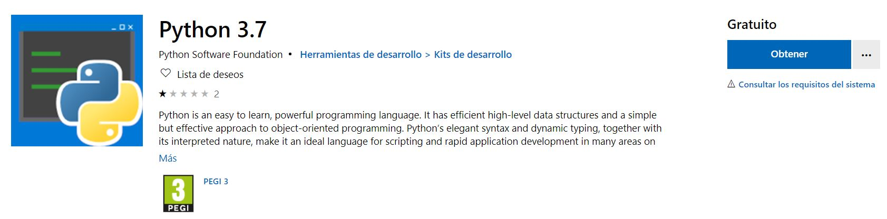
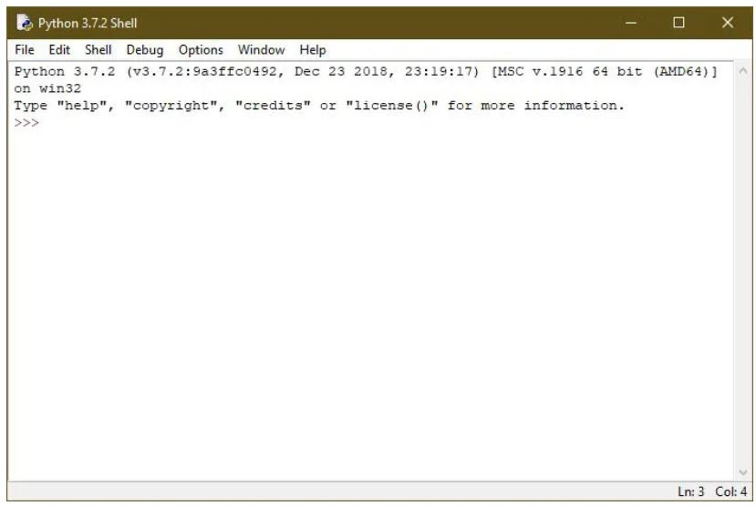
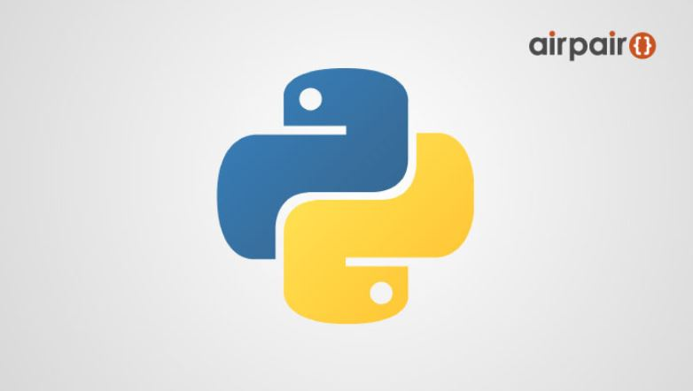

INSTALACION PYTHON
Aunque la mayoría de las aplicaciones que solemos usar día a día en nuestro ordenador están ya compiladas y preparadas para ejecutarse en Windows, seguro que alguna vez nos hemos encontrado con aplicaciones de código abierto sin compilar, sobre todo con scripts, que no hemos podido ejecutar por no tener el entorno de programación instalado y configurado en nuestro ordenador. Esto ocurre muy a menudo, sobre todo, con aplicaciones programadas en Python. Python es un lenguaje de programación orientado a objetos y multiplataforma diseñado para que cualquier aplicación creada con él se pueda ejecutar sin problemas en cualquier sistema operativo. Por defecto los sistemas operativos no son compatibles con este lenguaje de programación, por lo que para poder ejecutar aplicaciones programadas con él es necesario instalar todas las librerías y dependencias de Python en el sistema y configurarlas, una tarea que para muchos puede llegar a ser complicada. La Python Software Foundation quiere facilitar el uso de Python para todos los usuarios, sobre todo a la hora de instalarlo y prepararlo en los ordenadores. Por ello, la fundación ha decidido publicar en la Windows Store un paquete de instalación de este entorno que nos permitirá preparar nuestro ordenador para ejecutar aplicaciones programadas con este lenguaje.
Este paquete de instalación no nos viene con absolutamente todos los componentes que se incluyen en el instalador completo convencional, y es que sus responsables aún están trabajando para poder llevar todos estos componentes a este instalador. Además, también advierten de que puede haber algún problema y hacer que algunas aplicaciones no funcionen correctamente.
para descargar python de click en el siguiente enlace AQUI DOWNLOAD
El Python 3.7 de la Windows Store es un paquete creado para que los usuarios puedan ejecutar paquetes y scripts fácilmente, así como usar algunos entornos de desarrollo como IDLE. Una de las ventajas de este paquete de la Microsoft Store es que nos garantiza que vamos a poder usar este lenguaje de programación sin que ninguna configuración dañe otros programas al estar aislado en entorno de desarrollo. Además, en caso de no necesitarlo podremos borrarlo mucho más fácilmente, así como actualizarlo al poder aprovecharnos de las actualizaciones automáticas de la Microsoft Store. Tras instalar el paquete de Python 3.7 ya podremos empezar a utilizar este entorno de desarrollo. Además de tener su propia línea de comandos, también se integrará en CMD, por lo que podremos ejecutar paquetes y scripts fácilmente desde símbolo de sistema en Windows 10.
Como podemos ver, a partir de ahora va a ser mucho más sencillo poder ejecutar aplicaciones, paquetes, scripts o cualquier contenido escrito en Python en Windows 10, pudiendo tener un entorno totalmente aislado del resto del sistema y siendo muy fácil de instalar, configurar, poner en marcha e incluso de desinstalar. Eso sí, si aún no hemos dado el salto a Windows 10 tendremos que instalar este entorno de desarrollo con el instalador clásico.
